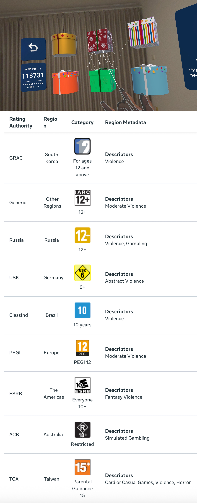

About the Game
Spatial Web Shooter is all about web shooting — with tons of unique experiences to bring your superpower dream to life like never before.
- Shoot webs freely across your space to live out your childhood dream — simple yet satisfying!
- Place and interact with over 20 fun, physics-based props for endless possibilities.
- Enhance immersion with Reality Enhancement Props, letting your webs come alive as they interact with the environment.
- Use Mirror prop to see yourself reflected with real-time web effects. For the first time ever, you can actually see yourself as the web-powered hero.
- Take on thrilling challenges such as Dinosaur Fight, Treasure Catch, and Web Escape. Earn Web Points, redeem Mystery Boxes, and unlock new props.
- Play with either hand tracking or controllers. Feel every action with controller haptic feedback.
Supported Devices & Languages
Supported Devices: Meta Quest 2, Meta Quest 3, Meta Quest 3S, Meta Quest Pro
Supported Languages: English, 中文 - Chinese (China), Français - French (France), Deutsch - German, 日本語 - Japanese, 한국어 - Korean, Español - Spanish (Spain)
What's Next
A new Challenge mode focused on Web Swinging is in development. Building the swing mechanics is something completely new for Spatial Web Shooter. Here’s an early look!
Frequently Asked Questions (FAQ)
1. How many virtual props are there now? Will there be more?
There are currently 28 props, including 7 Reality Enhanceable props and 2 Super Prop.
More props will be developed and added in future updates.
2. How about more Challenge modes?
Yes! More Challenge modes are in development and will be added gradually as they’re completed. These take longer to create than regular props because each mode involves unique mechanics and interactions.
One planned Challenge will feature a web-swinging experience.
3. What is Super Prop?
Super Prop is a more advanced prop that you can purchase directly with Web Points (earned through Challenges), so you don’t need to rely on random Mystery Boxes. It costs more Web Points than regular props.
However, the latest Super Prop is always free to unlock. You can unlock it for free until the next one is released.
4. How do I get the mirror prop as soon as possible?
Normally, you earn Web Points by completing challenges and then open Mystery Boxes in hopes of obtaining it.
However, there is a method to get the Mirror prop directly without spending any Web Points. For full details, please join the Discord community.
5. Why is the game rated as R 18+ in Australia? What content causes this?
The app rating was determined automatically based on a questionnaire about game content, which then set ratings across different regions. In most places, the game is rated 12+, but in Australia it received an R 18+ rating. (See the chart below for region-specific ratings and reasons.)
This higher rating comes from the category of "Simulated Gambling". In the game, players can earn Web Points through challenges and use them to open Mystery Boxes that contain random props. There are no extra charges—it's simply a fun way to add randomness to item rewards. The game does not contain sexual content.
The outcome may feel stricter than expected, and many other games are affected by the same rules. For more details, see this article: Australia tightens in-game gambling rules .
6. Cannot enter Free Play mode?
This issue only occurred in early development builds and has already been fixed in the release version. It happened when previously placed props were saved in a format that Free Play could not load.
If this somehow happens, go to the Home page, tap About, then tap the title "Spatial Web Shooter" at least 3 times. This will clear the old prop scene data, and you should then be able to enter Free Play normally. (Your unlocked props will not be affected.)
Contact
If you encounter issues that can’t be resolved with the FAQ, you can reach out to the developer:
- Official Support Email: tan9ochen+sws@gmail.com
- Discord Community: Join Discord
- Developer's Blog: http://TangoChen.com
- X (Twitter): @TangoChen